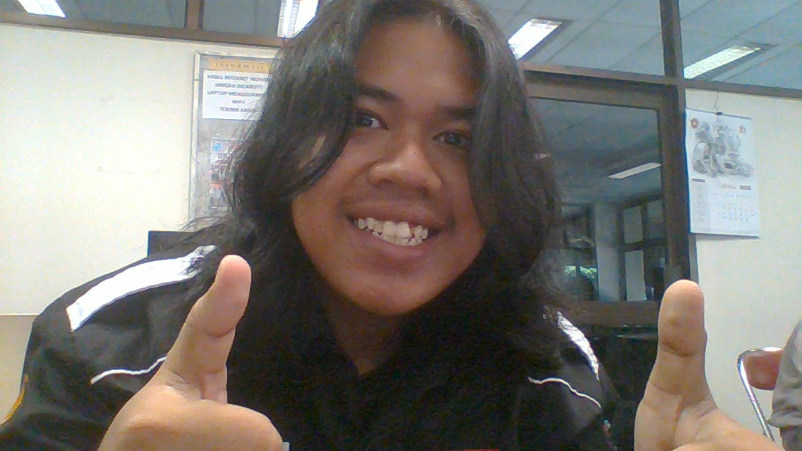

hallo kenalin namaku Ferry. statusku saat ini adalah mahasiswa Informatika semester 4.
saat ini saya sedang belajar pemrograman berbasis platform. saya sangat suka untuk mempelajari hal baru.
ada beberapa channel yang sering saya tonton seperti
wkwwk mungkin aneh karna namaku juga ferry, ya aku juga suka hal-hal yang berbau politik
Sekarang saya memasuki tahun kedua paruh kedua, dan berikut adalah beberapa mata kuliah pemrograman yang sudah saya ambil selama 1,5 tahun berkuliah di jurusan Informatika.
| No. | Mata Kuliah | Pengampu | Status |
|---|---|---|---|
| 1. | Algoritma dan Pemrograman | Drs.Johanes Eka Priyatma M.Sc., Ph.D. | Sudah diambil |
| 2. | Pemrograman Berbasis Objek | Drs.Johanes Eka Priyatma M.Sc., Ph.D. | Sudah diambil |
| 3. | Pemrograman Berbasis Objek Lanjut | Eduardus Hardika Sandy Atmaja Ph.D. | Sudah diambil |
| 4. | Struktur Data Linear | Ir.JB. Budi Darmawan S.T., M.Sc. | Sudah diambil |
| 5. | Struktur Data Non Linear | Dr.Sri Hartati Wijono | Sudah diambil |
| 6. | Pemrograman Analisis Data | Ir.Rosalia Arum Kumalasanti M.T. | Sudah diambil |
©INFORMATIKA
®FILIPUS FERRY PRADANA